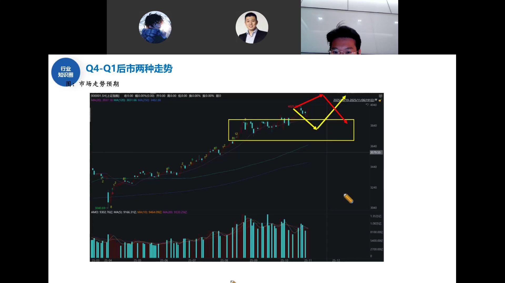
站上4000点之后，市场接下来怎么走？小邓老师认为有两种情景：
年末先休整一波，回调到3800-3900区间，明年春季再启动。这是目前市场的主流预期——四中全会、十五五规划、中美问题已暂告一段落，科技AI处于业绩真空期，年末机构兑现收益、散户拿钱过年，银行券商会相对好一些。
既然大家都觉得年末要调、春季再涨，市场可能直接一把拉到4200甚至4300，不等回调。到明年两会前后再往下跳。这种情况下AI科技需要发很大的力，但会透支后面的业绩。
小邓老师建议：用"中局思维"——不管先跌后涨还是先涨后跌，最终都能到4200。忍受中间波动，做好跌到3800的最坏准备，然后等4200。个人投资者没有机构年末考核压力，不必纠结短期节奏。
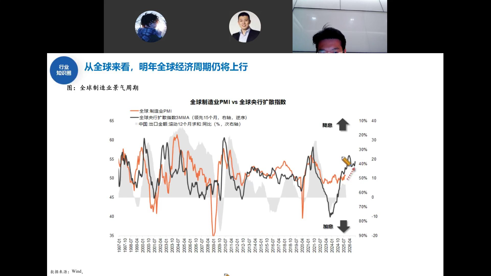
图中红线是全球制造业PMI，黑线是全球央行扩散指数（领先15个月）。金融周期一般领先经济周期：加息收紧流动性→经济走弱→降息宽松→经济起来。
从去年三季度（2024年9月）全球首次降息算起，这一轮宽松周期已经走了一年多。今年中国出口远超预期，是支撑国内企业盈利的重要原因。
金融周期领先经济周期约15个月，目前全球央行扩散指数已从底部回升，意味着明年全球制造业PMI仍将继续上行。这对A股、港股、美股都是基本面支撑。
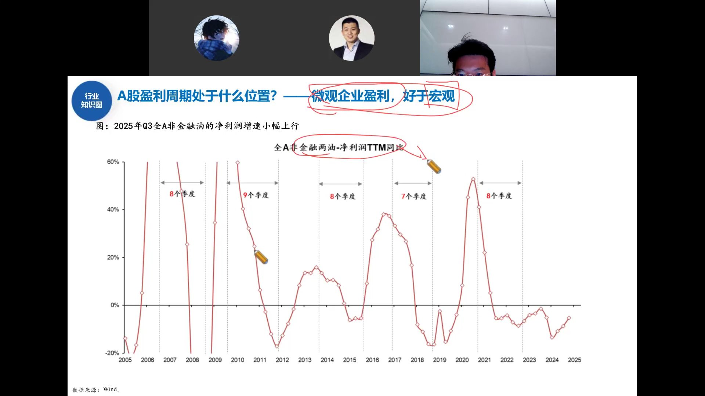
一个很大的认知差：大家看宏观GDP、通胀觉得经济不行，但A股上市公司的微观盈利其实比宏观数据强。
全A非金融两油的净利润TTM同比，最低点出现在2024年Q4（当时很多企业洗大澡、计提减值），之后连续三个季度上行。如果不算去年Q4的低基数，今年企业盈利大概在2%-5%的正增长。
这轮牛市有基本面支撑，跟2015年纯杠杆、纯流动性驱动不一样。股票是领先经济的——今年从ICU到出院，弹性最大；明年是出院后慢慢康复，赚业绩的钱，估值弹性会下降。
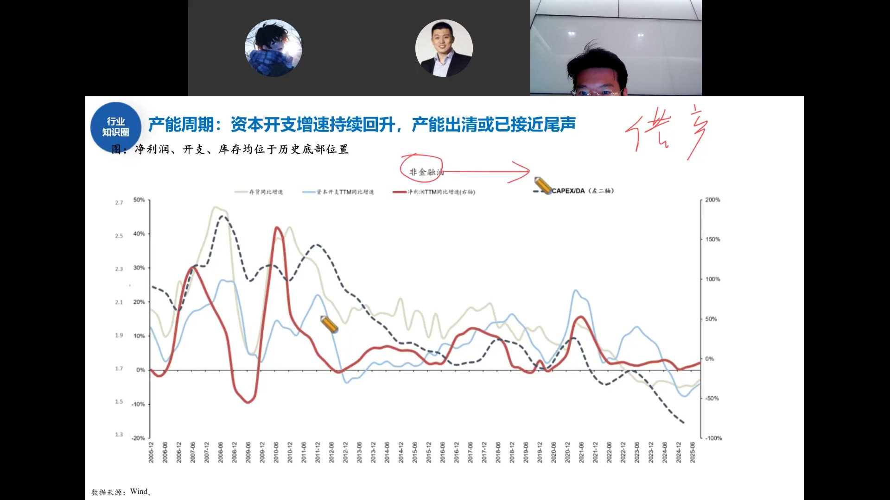
把所有上市公司当做一个企业来看，供需周期非常健康：
从历史周期看，企业盈利上行周期一般1.5-2年。如果以2024年924为底部，今年是第一年上行，明年继续往上，到2026年底或2027年初可能进入下行。
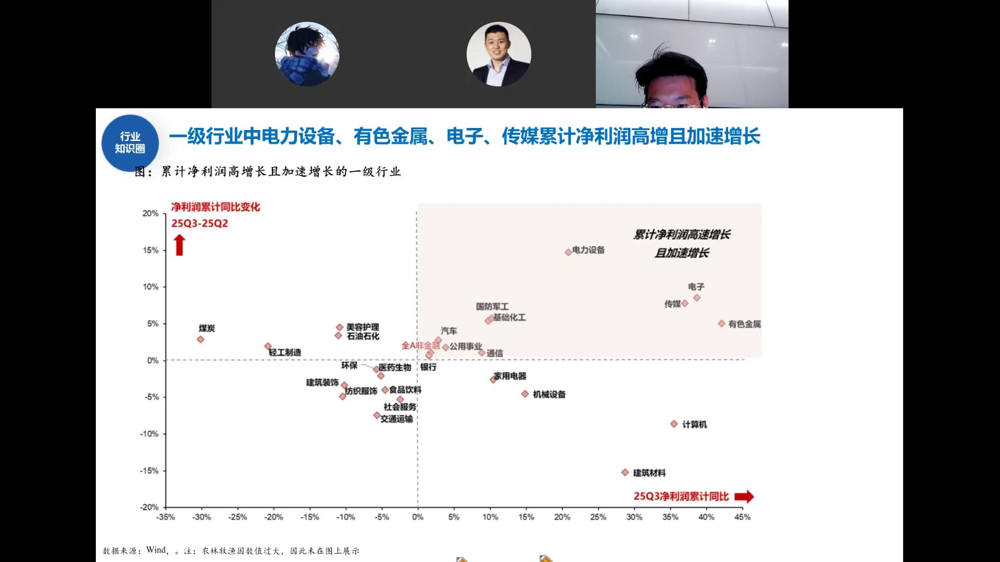
横轴是2025Q3累计净利润同比（绝对增速），纵轴是较Q2的边际变化（加速度）。右上角区域是"增速又快、还在加速"的行业：
而计算机虽然增速不低，但在减速；建筑材料最差，还在大幅下滑。
今年市场表现跟基本面高度一致——涨得好的板块基本面确实好。这轮牛市不是纯瞎炒。
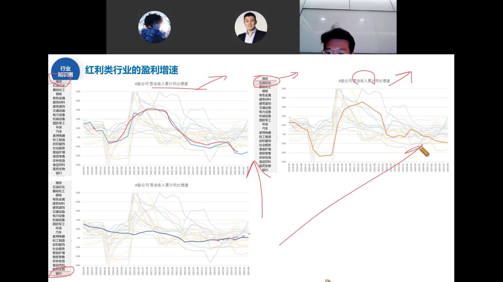
红利股今年表现差，从盈利端可以解释：
资金抛弃红利是有基本面原因的——传统高股息行业的盈利周期在往下走。
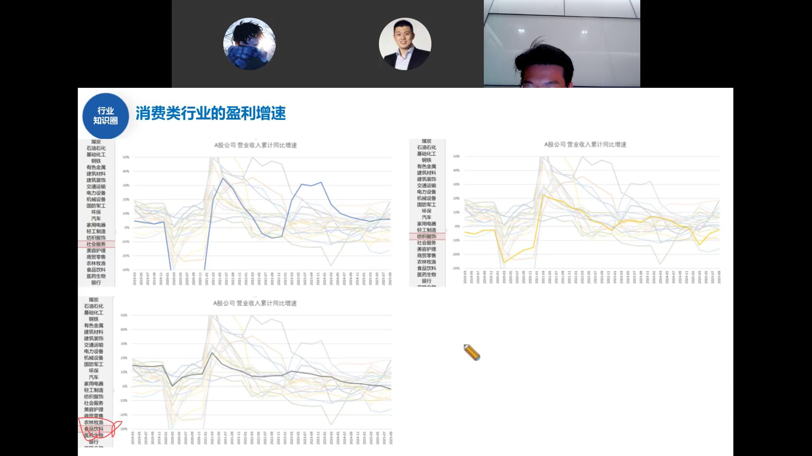
消费确实是最差的板块：
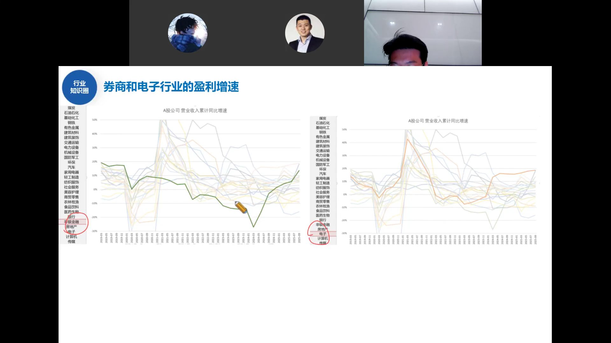
有色、钢铁、军工、新能源的盈利周期也在往上修复。全年看：消费最差，红利不行，周期有分化，TMT电子最强。
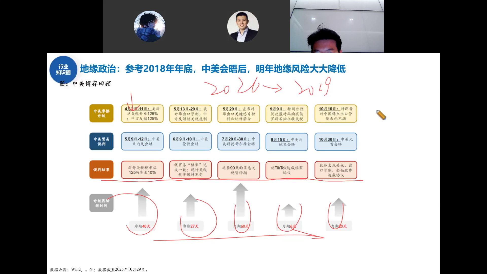
2025年中美从摩擦升级到谈判，间隔时间越来越短（40天→27天→60天→6天→20天），说明双方实质性分歧在缩小。
可以类比2018年：当年也是上半年开始打关税，到12月G20会晤后达成协议。那次会晤是分水岭——之前发个Twitter都能让A股暴跌，之后即使互加关税市场也不care了。
2026年类似2019年：中美问题已经定调"要谈、能谈拢"，对资本市场不再是核心矛盾。不用再纠结年初出什么新关税条款对市场的影响。
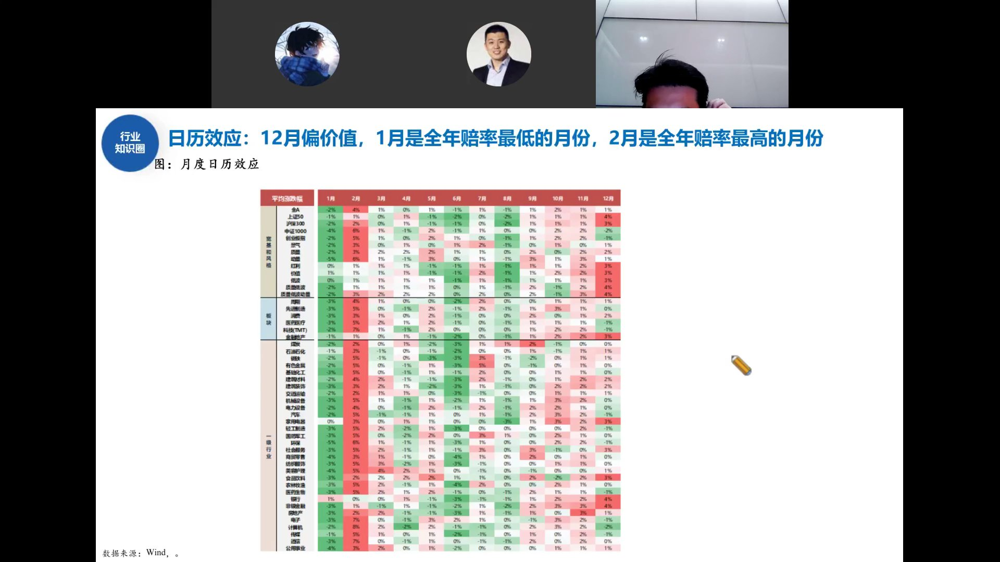
统计各行业和指数在不同月份的历史平均涨跌幅：
这就是为什么市场一致预期"年末先调、春季再涨"——每年都这样。在稳态周期里出现一个叛徒，大家都是叛徒。但也要注意：如果市场不按一致预期走，直接拉上去，就是另一种情景。
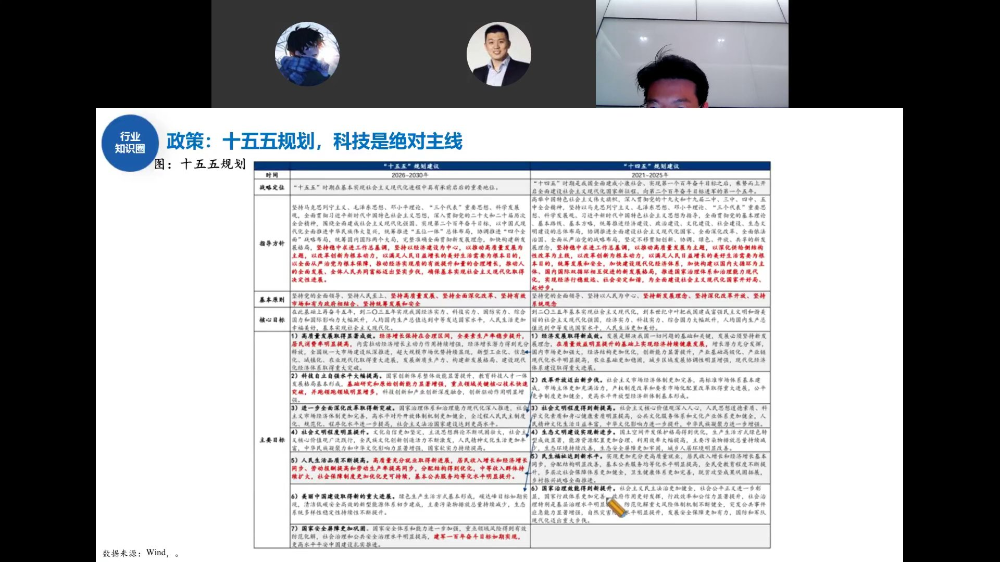
四中全会通过的十五五规划建议，最关键的变化：
科技已经是"一致预期中的一致预期"——when就是科技。这个共识肯定要兑现，主线不用想太多。
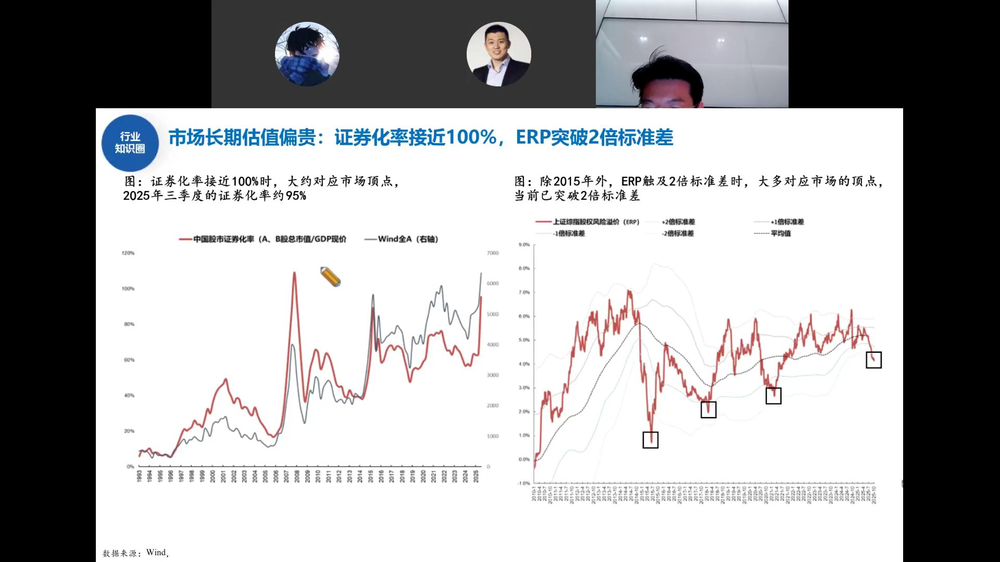
必须泼一盆冷水：所有中期估值指标都显示A股不便宜了。
A股市值/GDP，类似一个国家的PE。目前约95%，接近2015年最高点100%的位置。
股息率减国债收益率，衡量股票相对债券的性价比。目前红线已跌破-2倍标准差，对应2015年中、2018年初、2021年初等历史顶部位置。
贵是贵，但对短期没有指示意义——2015年初ERP就破了阈值，市场又冲了两个季度才崩盘。在非理性状态下市场可以延续很久。4000点绝对不是2600点那种便宜位置，但也不意味着马上要跌。
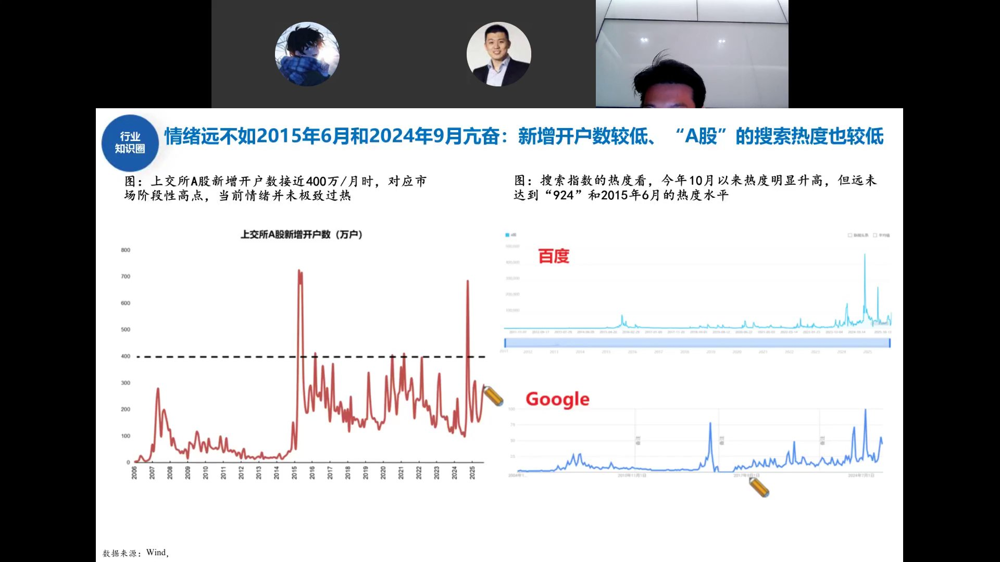
好消息是：情绪指标远没有2015年6月和2024年9月那么亢奋。
今年增量资金主要来自ETF、量化私募、赛道基金，而不是散户直接开户下场。这种走法更稳健，牛市可以走得更远——A股崩盘只有两种：暴涨后暴跌，或者监管出手。
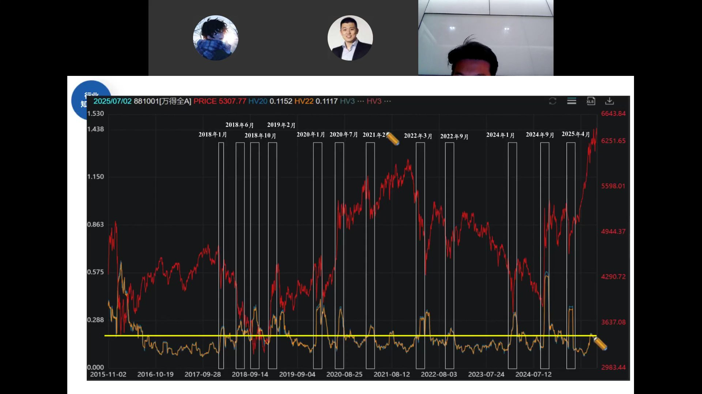
下面那条橙线是市场波动率（HV20），目前在历史极低位置附近。
波动率低意味着市场不太会暴涨暴跌；但现在已到临界点——只要再高一点点，波动率会迅速放大，要么像924那样暴涨，要么像4月7号那样暴跌。
这是小邓老师团队最密切跟踪的短期指标。宏大叙事对短期没用，需要定量客观数据来判断拐点。
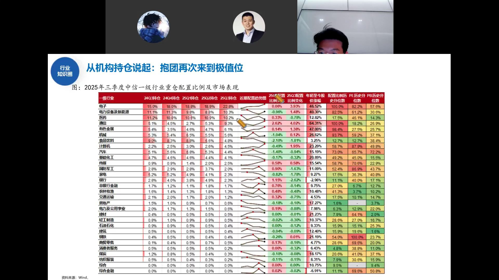
2025年三季报公募基金持仓：
现在公募的仓位结构：40% TMT + 10%新能源 + 10%医药 = 60%押在成长方向。拥挤度确实高了。
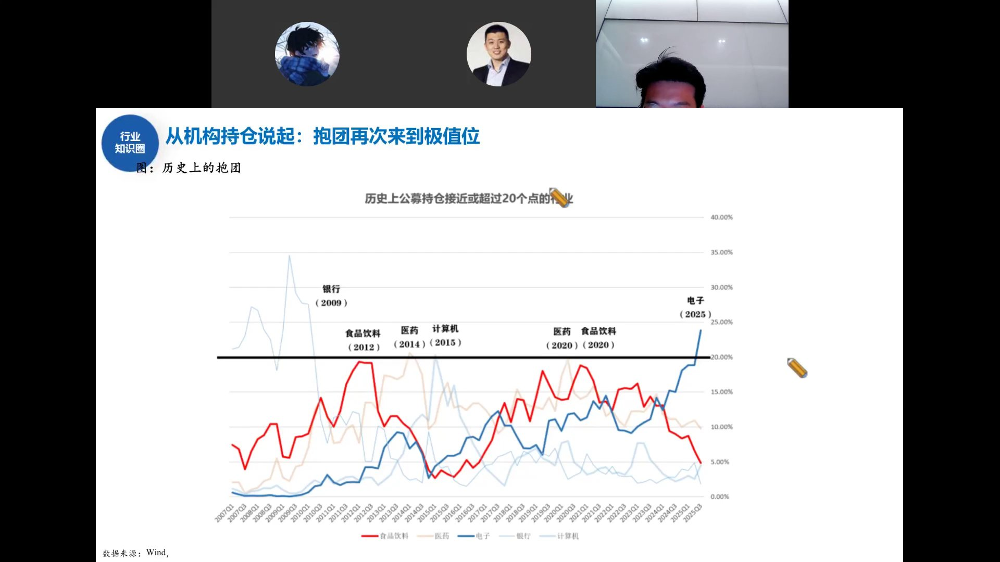
历史上公募单一行业持仓接近或超过20%的，一共只有五次：
尊重历史的话，一个行业到20%仓位基本到头了。但小邓老师提醒：不必现在就跑，中间可能还有几个季度的上涨。如果明年上半年TMT再泡沫化一波、指数到4200以上，那时再考虑切到低位板块。
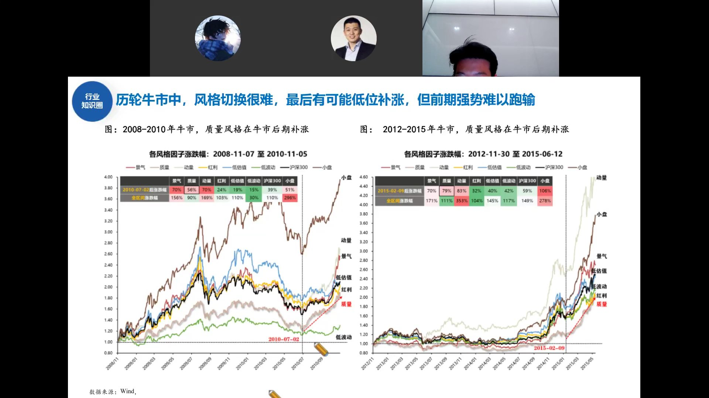
很多人担心像2014年底那样，一把从TMT切到金融。但历史数据说：牛市里风格切换非常罕见。
小盘股一路领涨，从未输过。直到牛市最后几个月，其他风格才补涨一把。
小盘+景气一路强到尾。2015年末端其他板块也补涨了，但主线从来没有中途换过。
即使2014年底那波金融暴动，你一直拿着TMT到2015年牛市结束，超额收益也没少赚。牛市里做高低切，难度极高。
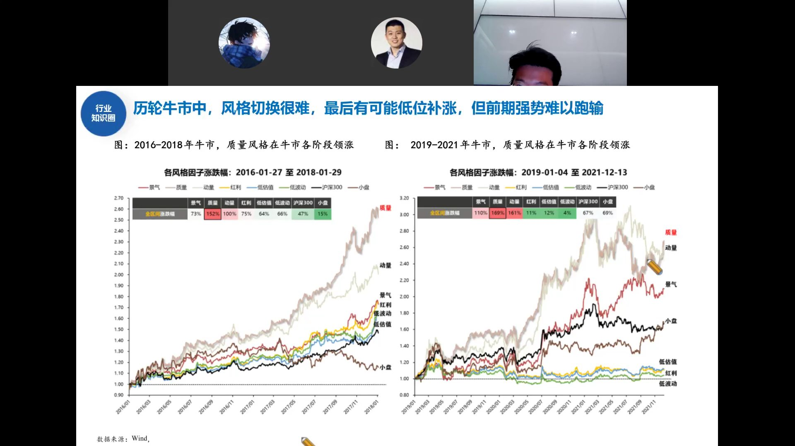
质量风格全程领涨，小盘垫底。
质量+动量继续领涨，低估值、红利全程跑输。
四轮牛市无一例外：强势风格从头强到尾，只有最后阶段低位补涨。今年是小盘成长/TMT风格，很可能会一直强到牛市结束。中间的小幅波动不用管。
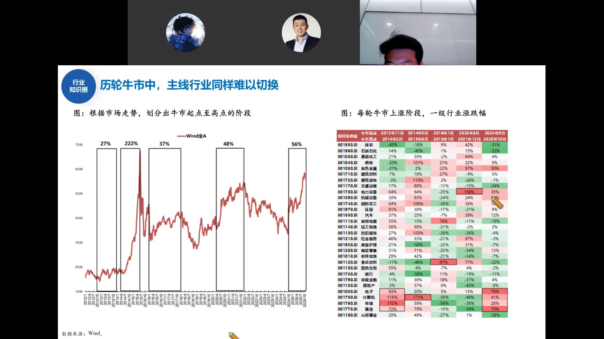
每轮牛市起点到高点，一级行业涨跌幅对比：
牛市顶部只有两种结局：要么低位板块补涨后结束（2015、2010），要么高低都涨不动直接崩。唯一一次真正的大行业切换是2021年从消费切到新能源——但那需要全新产业趋势+业绩兑现，条件极其苛刻，概率极低。
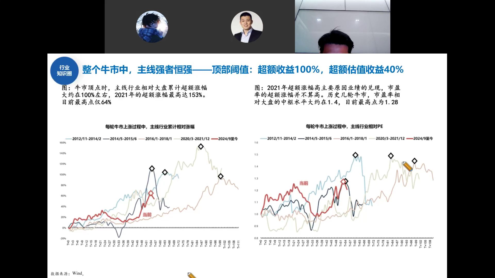
小邓老师团队研究出的定量顶部阈值：
历史每轮牛市主线行业相对大盘的累计超额涨幅，顶部都在100%左右。2021年新能源最高153%。目前TMT从924算起超额约60%，还没到极值。
主线行业相对大盘的PE比值，历史顶部在1.4左右（即超额估值40%）。目前约1.28，还有空间。
结论：顶部不是靠"拥挤度""换手率"判断的（那些指标每轮都创新高），而是看主线相对大盘的超额收益。目前还有距离，主仓位继续拿着科技。
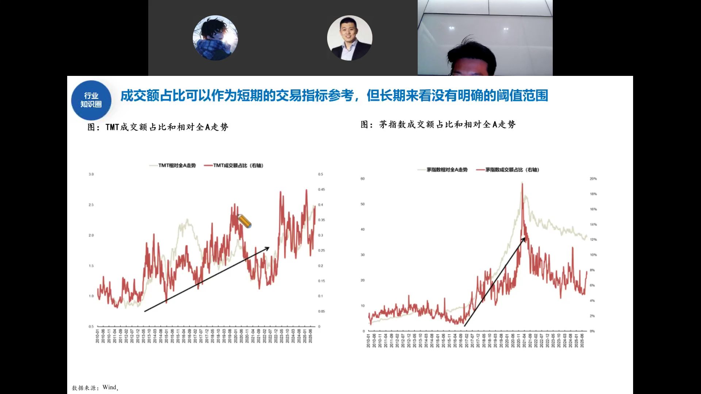
很多人用TMT成交额占比来判断"拥挤"——现在TMT占全市场成交30%-40%，觉得很高了。
但历史看这个红线从2011年以来一直在趋势性抬升，每轮牛市都创新高。如果因为这个指标高了就卖，会完美错过TMT每轮牛市的后半段。
成交额占比只能作为短期交易参考，长期来看没有明确阈值。判断顶部还是要看超额收益和超额估值。
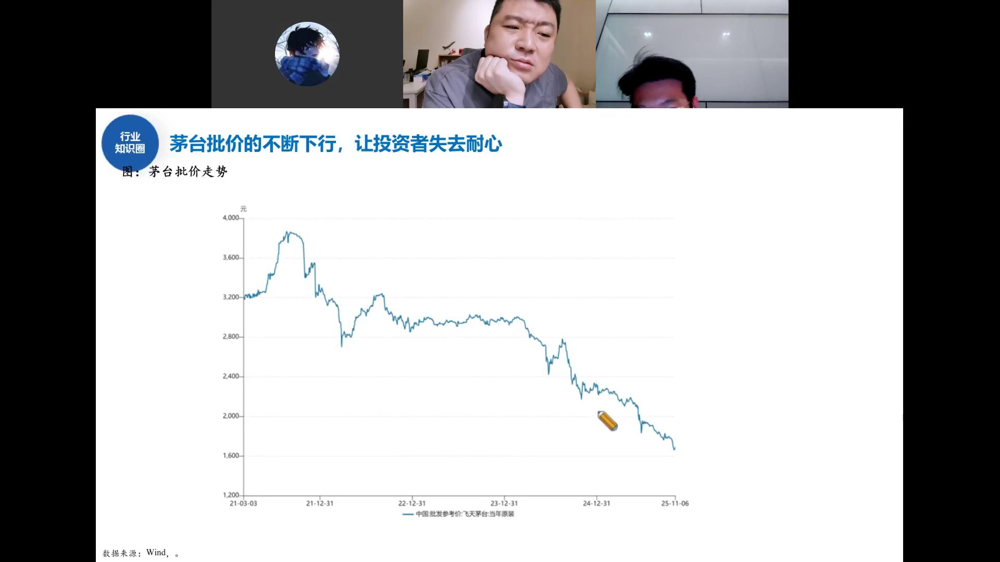
茅台批价从2021年高点近3800元一路跌到现在1600-1700元，市场一片"年轻人不喝白酒""老登经济完蛋了"的声音。
但小邓老师指出：这种声音在2013-2014年一模一样——当年反腐对应现在的三公消费收紧，也是说年轻人不喝白酒。结果呢？2016-2020年白酒走出了史诗级牛市。
白酒现在从很多维度看像2014年底——仓位砍了一半，批价持续下行，所有人都悲观。如果明年上半年科技泡沫化、指数到4200以上，这些"狗不理"的低位板块就到了可以关注的时候。